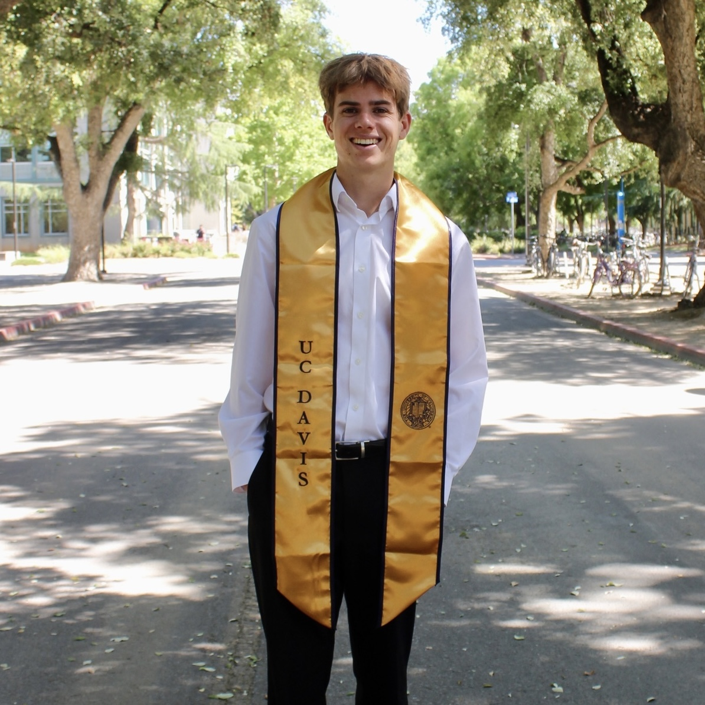
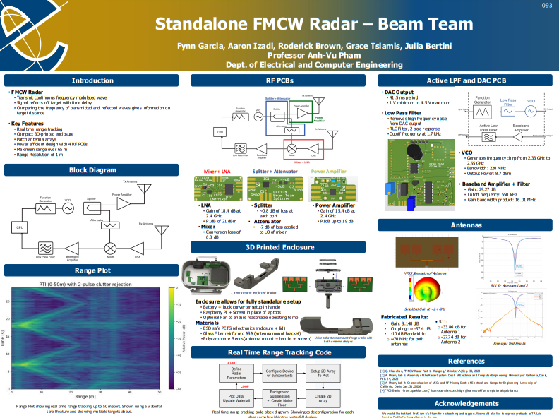
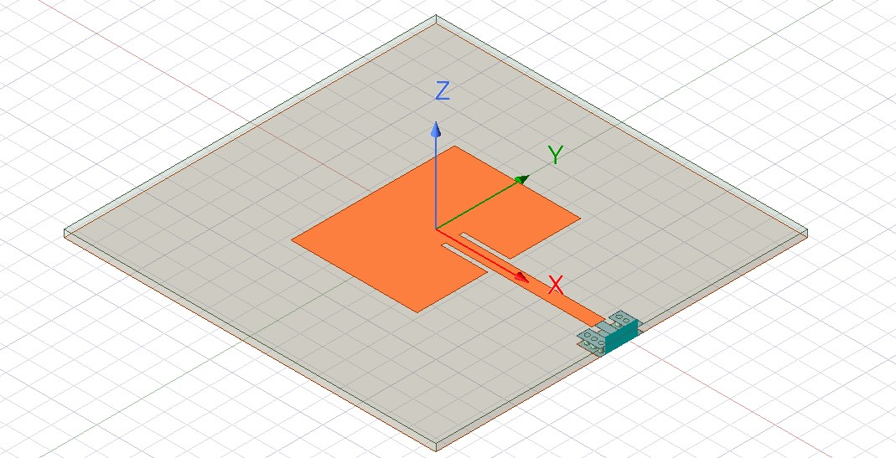
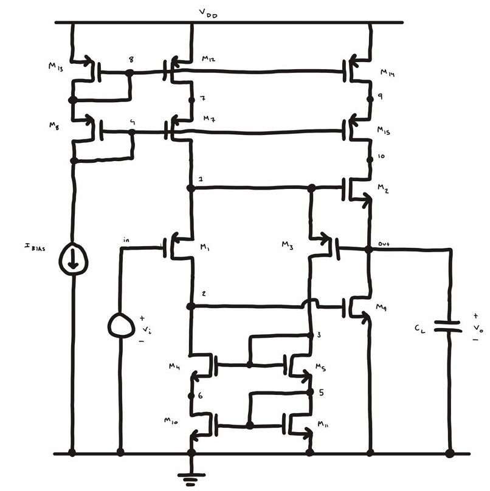
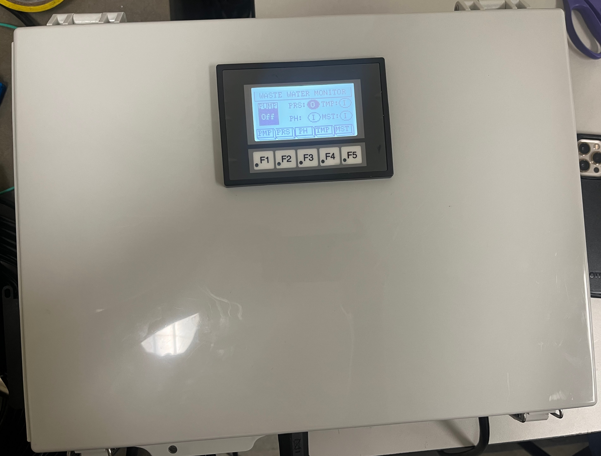
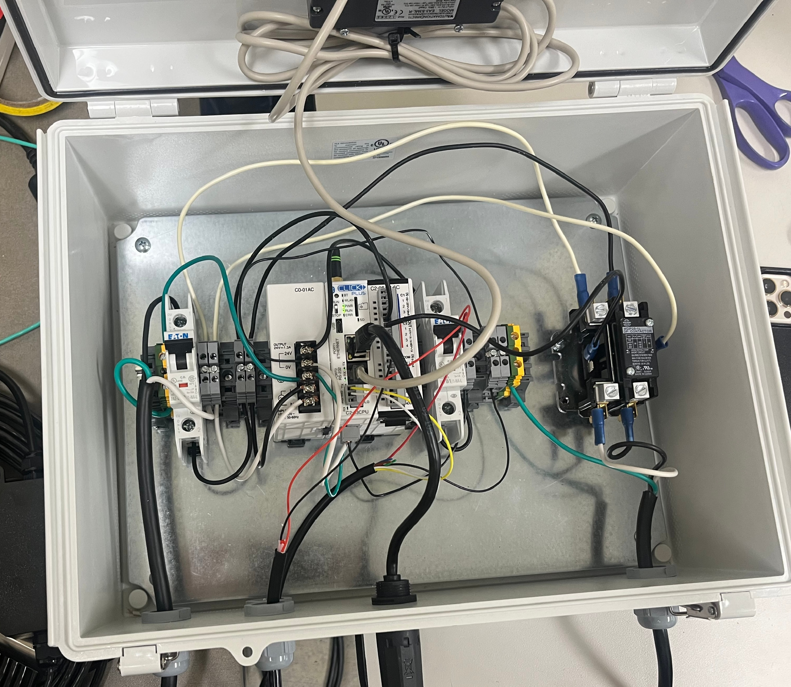
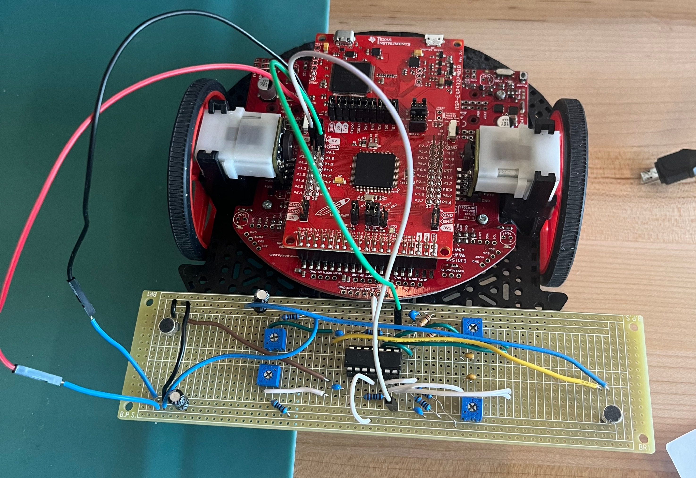

I am a master's electrical engineering student at UC Davis with a strong interest in analog circuit design and RF systems. My academic background has given me a solid foundation in circuit theory, elctromagnetics, and digital systems, while my hands-on experience has allowed me to design, test, and troubleshoot circuits and RF systems in project settings at school, in industry, and at home. I am eager to apply my skills to take on the next challenge and continuing to develop as an engineer.
New Product Introduction Engineering Intern at Keysight Technologies, supporting the testing and development of Keysights latest RF signal generator.
For more information about what I've been working on visit: Projects





